install.packages("cmdstanr", repos = c("https://mc-stan.org/r-packages/", getOption("repos")))
cmdstanr::install_cmdstan() # installs Stan... only needs to be done onceBayesian Inference
Objectives
This module provides an introduction to Bayesian inference and Bayesian linear regression, building directly on the Maximum Likelihood Estimation (MLE) framework introduced in the previous module.
By the end of this module, you should be able to:
- Explain the conceptual difference between frequentist (MLE) and Bayesian inference
- Describe the roles of the prior, likelihood, and posterior in Bayes’ Theorem
- Specify and justify prior distributions for regression parameters
- Fit a Bayesian linear regression using
{brms} - Evaluate MCMC chain quality using standard diagnostics
- Compare Bayesian credible intervals to frequentist confidence intervals and MLE parameter estimates
Preliminaries
- Install and load these packages in R: {brms}, {bayesplot}, {tidybayes}
- Load {tidyverse}
{brms} uses Stan as its computational backend, which must be installed separately once using the {cmdstanr} package:
Bayesian Framing: From Likelihoods to the Posterior Probability Distribution
Recall from the MLE module that the likelihood \(\mathcal{L}(\theta | \mathbf{x})\) tells us how probable the observed data \(\mathbf{x}\) are under a given set of parameters \(\theta\). MLE finds the single value of \(\theta\) that maximizes this likelihood, returning one best-guess number for each parameter.
Bayesian inference takes a different approach. Rather than asking “what single value of \(\theta\) best explains the data?”, it asks “given the data, what is the full probability distribution over plausible values of \(\theta\)?”
This is expressed through Bayes’ Theorem:
\[P(\theta | \mathbf{x}) = \frac{P(\mathbf{x} | \theta) \cdot P(\theta)}{P(\mathbf{x})}\]
Where:
- \(P(\theta | \mathbf{x})\) is the posterior – our updated belief about \(\theta\) after seeing the data
- \(P(\mathbf{x} | \theta)\) is the likelihood – the same quantity we maximized using MLE
- \(P(\theta)\) is the prior – our belief about plausible values of \(\theta\) before seeing the data
- \(P(\mathbf{x})\) is the marginal likelihood (or evidence) —- a normalizing constant ensuring the posterior density distribution integrates to 1
In practice, we almost always write this proportionally, dropping the normalizing constant since it does not depend on \(\theta\) and is often intractable to compute:
\[P(\theta | \mathbf{x}) \propto P(\mathbf{x} | \theta) \cdot P(\theta)\] … or …
\[\underbrace{\text{posterior}}_{\text{what we want}} \propto \underbrace{\text{likelihood}}_{\text{from data}} \times \underbrace{\text{prior}}_{\text{prior belief}}\]
NOTE: The key conceptual shift here is that whereas MLE gives us a point estimate for the the single most likely parameter value for each parameter, Bayesian inference gives us a distribution, i.e., a full description of our uncertainty about the parameters, updated by the data.
Priors: Encoding Prior Belief
The prior distribution \(P(\theta)\) is what distinguishes Bayesian from frequentist inference. It encodes our beliefs about plausible parameter values before seeing the data. The choice of prior is both the most powerful and most debated aspect of Bayesian analysis.
Types of Priors
Weakly informative priors constrain parameters to a plausible range without strongly forcing them toward specific values. They prevent the sampler algorithm from exploring obviously impossible regions of parameter space (e.g., a negative standard deviation, or an abnormally steep regression slope) while remaining broadly permissive. These are usually the best default choice.
Informative priors encode genuine substantive knowledge, for instance, based on previous studies, meta-analyses, or domain expertise (e.g., information about the fossil ages can be used to set informative priors in Bayesian phylogenetic analyses when divergence dates are parameters being estimated). When such knowledge exists, using it makes inference more efficient and results more interpretable.
Flat (non-informative) priors assert equal probability density for parameter values across a wide or unbounded range. When combined with the likelihood, flat priors will generate estimates for parameter values that closely resemble MLE solutions. These sound appealing but can cause computational problems and, for parameters with natural constraints (like variances, which have to be positive), are often not truly non-informative on the relevant scale.
We can visualize how different priors affect our beliefs about a particular parameter, such as a mean, \(\mu\):
prior_df <- tibble(
x = seq(0, 100, length.out = 500),
flat = dunif(x, 0, 100),
weakly_informative = dnorm(x, mean = 50, sd = 20),
informative = dnorm(x, mean = 50, sd = 5)
)
prior_df |>
pivot_longer(-x, names_to = "prior", values_to = "density") |>
mutate(prior = factor(prior, levels = c("flat", "weakly_informative", "informative"))) |>
ggplot(aes(x = x, y = density, color = prior)) +
geom_line(linewidth = 1.2) +
labs(
title = "Three Prior Distributions for μ",
x = "μ", y = "Prior Density", color = "Prior Type"
) +
theme_minimal()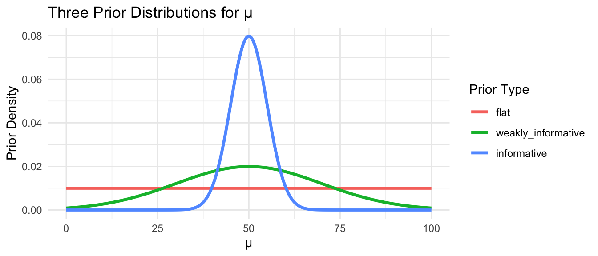
Note: The flat prior assigns equal probability to any value between 0 and 100. The weakly informative prior says values near 50 are most plausible but allows considerable spread. The informative prior asserts strong prior belief that \(\mu\) is close to 50.
Prior Predictive Simulation
A useful technique before fitting any Bayesian model is prior predictive simulation. This process generates samples of data based on your priors alone, before seeing any observations, and asks whether the implied data look plausible. If your priors imply that summary statistics for your data that are implausible (e.g., that average human heights could be impossibly tall or short), they need revision.
The {brms} package makes this easy with the sample_prior = "only" argument. Here, we are effectively simulating data sets and regression lines for height ~ weight from a model where…
- β1 ~ Normal(0, 1)
- β0 ~ Normal(65, 10)
- σ ~ Exponential(0.1)
These priors imply that…
- slopes could be fairly high (>1 inch per unit weight)
- the intercept is centered around 65 inches
- the standard deviation of the residuals is typically around ~0.1 (but with a long tail)
… i.e., that, before seeing data, we are imagining that “Heights are around 65 inches, with some variability, and weight might have a moderate effect on height.”
NOTE: The
brm()function compiles the model to C++ the first time it is run, which takes 30–60 seconds. Subsequent runs with the same model structure are faster.
f <- "https://raw.githubusercontent.com/difiore/ada-datasets/main/zombies.csv"
zombies <- read_csv(f, col_names = TRUE)
# Fit using priors only (no likelihood) to check prior predictive distribution
prior_only_model <- brm(
formula = height ~ weight,
data = zombies,
family = gaussian(),
prior = c(
prior(normal(0, 1), class = b), # prior for regression coeffiecient
prior(normal(65, 10), class = Intercept), # prior for intercept
prior(exponential(0.1), class = sigma) # prior for residual standard deviation
),
sample_prior = "only", # ignore the likelihood; sample from priors only
chains = 4,
iter = 2000,
warmup = 1000,
seed = 1,
refresh = 0
)Visualize Prior Predictive Checks
pp_check(prior_only_model, ndraws = 100) +
labs(
title = "Prior Predictive Check",
subtitle = "Do our priors alone imply plausible distributions of height values?"
) +
theme_minimal()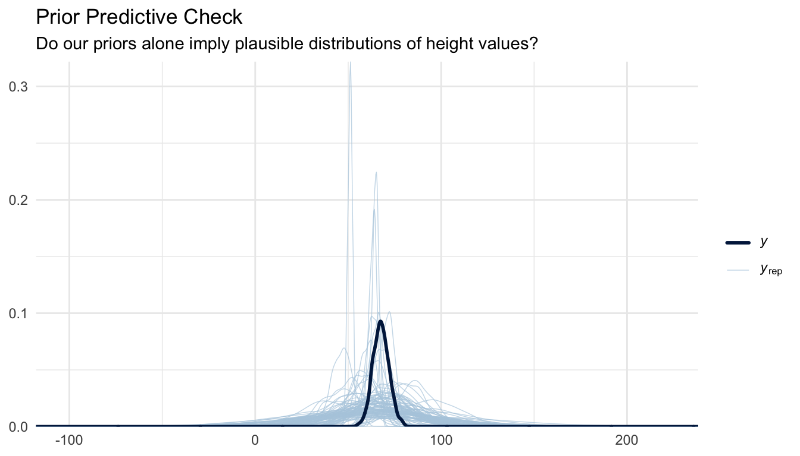
pp_check(prior_only_model, type = "hist", ndraws = 19) +
labs(
title = "Prior Predictive Check",
subtitle = "Do our priors alone generate plausible histograms of height values?"
) +
theme_minimal()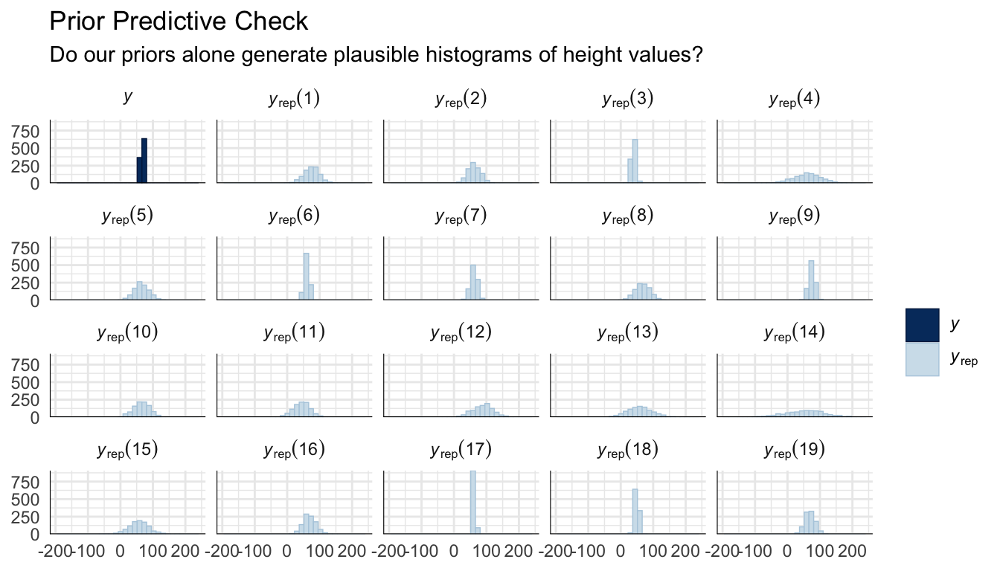
pp_check(prior_only_model, type = "stat", stat = "mean") +
labs(
title = "Prior Predictive Check",
subtitle = "Do our priors alone generate plausible mean height values?"
) +
theme_minimal()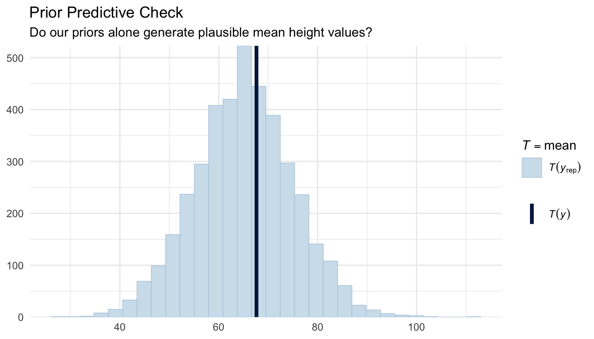
The simulated data from our priors should overlap reasonably with the range of observed heights in these two plots. If the prior predictive distribution is wildly off (e.g., implying impossible short or tall heights) we would revise the priors before fitting the full model.
We can also plot prior predictive regression lines based only on our priors and the range of our observed predictor (weight) values…
# Create a grid of weight values
weight_seq <- seq(min(zombies$weight), max(zombies$weight), length.out = 100)
# Get draws from prior predictive distribution
prior_draws <- prior_only_model %>%
add_epred_draws(newdata = data.frame(weight = weight_seq), ndraws = 100)
# Plot
ggplot(prior_draws, aes(x = weight, y = .epred, group = .draw)) +
geom_line(alpha = 0.2, color = "blue") +
labs(
title = "Prior Predictive Regression Lines",
x = "Weight",
y = "Predicted Height"
) +
theme_minimal()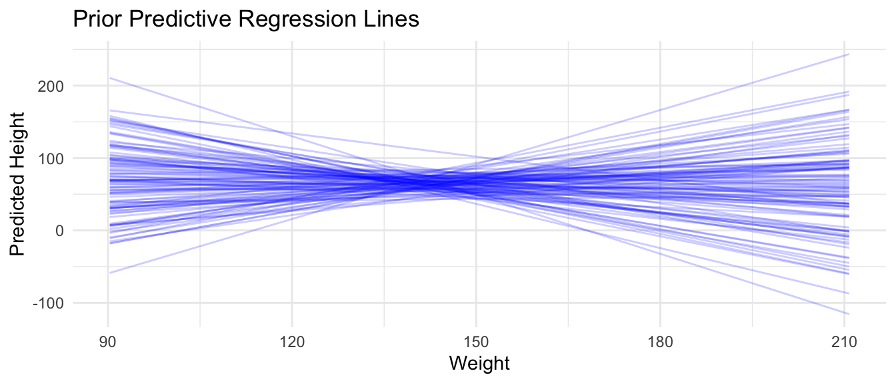
CHALLENGE
Suppose you are modeling human adult height (in inches). What kind of prior would you place on the mean height \(\mu\)? Write the prior as a normal distribution, specifying what values you would choose for its mean and standard deviation, and justify your choices. Then try using sample_prior = "only" with your chosen prior in brm() and run a prior predictive check.
Markov Chain Monte Carlo (MCMC)
For most models of practical interest, the posterior distribution \(P(\theta | \mathbf{x})\) cannot be computed analytically because the normalizing constant \(P(\mathbf{x})\) in Bayes’ Theorem requires integrating over all possible parameter values, which is intractable in high dimensions. Instead, we use Markov Chain Monte Carlo (MCMC) methods to sample from the posterior.
The key idea is that instead of solving for the posterior mathematically, we construct a random walk through parameter space such that, after a long enough run, the proportion of time the chain spends near any value of \(\theta\) is proportional to the posterior probability of that value. The resulting collection of samples approximates the posterior distribution, and we can use it to compute means, credible intervals, and any other summary we need.
{brms} uses Hamiltonian Monte Carlo (HMC) with the No-U-Turn Sampler (NUTS) via Stan as its backend. HMC uses gradient information about the posterior surface to make large, efficient jumps through parameter space, rather than taking small random steps as older Gibbs or Metropolis-Hastings samplers do. This process results in much lower autocorrelation between samples and higher effective sample sizes per iteration, making it the current standard for applied Bayesian computation.
Bayesian Linear Regression with {brms}
The {brms} package (Bayesian Regression Models using Stan) provides a high-level interface for Bayesian regression. Its formula syntax mirrors lm() and lme4, making it accessible for anyone familiar with standard regression modeling in R. Under the hood, {brms} translates your Bayesian model specification into Stan code, compiles it, and runs HMC sampling, without ever needing to write Stan directly.
OLS Regression (for comparison)
Let’s first fit the OLS model we want to compare our Bayesian regression against:
m_ols <- lm(height ~ weight, data = zombies)
summary(m_ols)##
## Call:
## lm(formula = height ~ weight, data = zombies)
##
## Residuals:
## Min 1Q Median 3Q Max
## -7.1519 -1.5206 -0.0535 1.5167 9.4439
##
## Coefficients:
## Estimate Std. Error t value Pr(>|t|)
## (Intercept) 39.565446 0.595815 66.41 <2e-16 ***
## weight 0.195019 0.004107 47.49 <2e-16 ***
## ---
## Signif. codes: 0 '***' 0.001 '**' 0.01 '*' 0.05 '.' 0.1 ' ' 1
##
## Residual standard error: 2.389 on 998 degrees of freedom
## Multiple R-squared: 0.6932, Adjusted R-squared: 0.6929
## F-statistic: 2255 on 1 and 998 DF, p-value: < 2.2e-16Fitting the Bayesian Model
m_bayes <- brm(
formula = height ~ weight,
data = zombies,
family = gaussian(), # normal likelihood, same assumption as OLS and our MLE model
prior = c(
prior(normal(0, 1), class = b), # weakly informative prior on slope(s)
prior(normal(65, 10), class = Intercept), # informed by plausible human heights (inches)
prior(exponential(0.1), class = sigma) # weakly informative prior on residual SD
),
chains = 4, # number of independent MCMC chains
iter = 2000, # total iterations per chain (first half used for warm-up)
warmup = 1000, # warm-up iterations discarded before sampling begins
seed = 42,
refresh = 0 # suppress per-iteration progress output
)Again, note that {brms} compiles a model to C++ the first time it is run, which can take 30–60 seconds. Subsequent runs with the same model structure are faster.
You can inspect the Stan code that {brms} generated, which is a useful window into how the formula interface maps onto a full probabilistic model in the Stan language:
stancode(m_bayes)## // generated with brms 2.23.0
## functions {
## }
## data {
## int<lower=1> N; // total number of observations
## vector[N] Y; // response variable
## int<lower=1> K; // number of population-level effects
## matrix[N, K] X; // population-level design matrix
## int<lower=1> Kc; // number of population-level effects after centering
## int prior_only; // should the likelihood be ignored?
## }
## transformed data {
## matrix[N, Kc] Xc; // centered version of X without an intercept
## vector[Kc] means_X; // column means of X before centering
## for (i in 2:K) {
## means_X[i - 1] = mean(X[, i]);
## Xc[, i - 1] = X[, i] - means_X[i - 1];
## }
## }
## parameters {
## vector[Kc] b; // regression coefficients
## real Intercept; // temporary intercept for centered predictors
## real<lower=0> sigma; // dispersion parameter
## }
## transformed parameters {
## // prior contributions to the log posterior
## real lprior = 0;
## lprior += normal_lpdf(b | 0, 1);
## lprior += normal_lpdf(Intercept | 65, 10);
## lprior += exponential_lpdf(sigma | 0.1);
## }
## model {
## // likelihood including constants
## if (!prior_only) {
## target += normal_id_glm_lpdf(Y | Xc, Intercept, b, sigma);
## }
## // priors including constants
## target += lprior;
## }
## generated quantities {
## // actual population-level intercept
## real b_Intercept = Intercept - dot_product(means_X, b);
## }Notice the structural similarity to the negative log-likelihood functions we wrote in the MLE module: there is still a normal() likelihood for the response, and the linear predictor mu = b0 + b1 * weight is identical. The Bayesian model simply adds explicit prior distributions on top.
Model Summary
summary(m_bayes)## Family: gaussian
## Links: mu = identity
## Formula: height ~ weight
## Data: zombies (Number of observations: 1000)
## Draws: 4 chains, each with iter = 2000; warmup = 1000; thin = 1;
## total post-warmup draws = 4000
##
## Regression Coefficients:
## Estimate Est.Error l-95% CI u-95% CI Rhat Bulk_ESS Tail_ESS
## Intercept 39.57 0.61 38.37 40.76 1.00 5668 3112
## weight 0.20 0.00 0.19 0.20 1.00 5707 3155
##
## Further Distributional Parameters:
## Estimate Est.Error l-95% CI u-95% CI Rhat Bulk_ESS Tail_ESS
## sigma 2.39 0.05 2.29 2.50 1.00 3432 2765
##
## Draws were sampled using sampling(NUTS). For each parameter, Bulk_ESS
## and Tail_ESS are effective sample size measures, and Rhat is the potential
## scale reduction factor on split chains (at convergence, Rhat = 1).The model summary for a Bayesian model provides…
- Estimate: Posterior mean for each parameter value
- Est.Error: Posterior standard deviation (analogous to a standard error)
- l-95% CI / u-95% CI: 95% Credible Interval, or the range within which the true parameter falls with 95% posterior probability
- Rhat: \(\hat{R}\) convergence diagnostic (should be ~1.00; see MCMC Diagnostics section below)
- Bulk_ESS / Tail_ESS: Effective sample sizes for the bulk and tails of the posterior distribution (should be > 1,000)
MCMC Diagnostics
Before interpreting any posterior summaries, we must verify that our MCMC chains have converged, that is, that they are reliably sampling from the true posterior distribution and not still warming up or trapped in a region of low probability. Never skip diagnostics!
Trace Plots
A trace plot shows the sampled parameter value at each iteration, plotted separately for each chain. Well-mixed, converged chains should look like “fuzzy caterpillars”: stationary noise around a stable mean, with all chains thoroughly overlapping one another. Visible trends, slow drift, or chains stuck at different values are all warning signs.
mcmc_trace(m_bayes, pars = c("b_Intercept", "b_weight", "sigma")) +
labs(
title = "Trace Plots",
subtitle = "Should look like overlapping fuzzy caterpillars!"
) +
theme_minimal()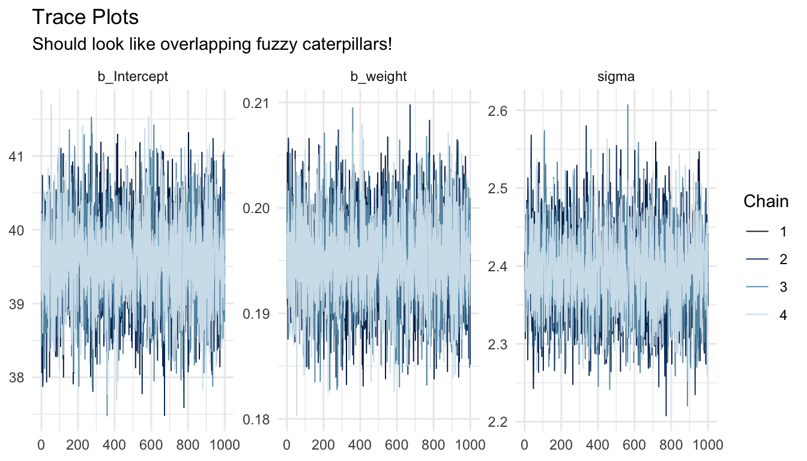
The Gelman-Rubin Convergence Diagnostic (\(\hat{R}\))
\(\hat{R}\) (or “R-hat”) compares the variance within each chain to the variance between chains. If all chains have converged to the same posterior, within-chain and between-chain variance should be roughly equal, yielding \(\hat{R} \approx 1.0\). Divergence between these indicates the chains are not yet exploring the same distribution.
Interpretation:
- \(\hat{R} \leq 1.01\) — strong evidence of convergence
- \(1.01 < \hat{R} \leq 1.05\) — acceptable, but consider running the MCMC chains for more iterations
- \(\hat{R} > 1.05\) — concerning; do not interpret results without further investigation
- \(\hat{R} > 1.1\) — chains have not converged; results are unreliable
\(\hat{R}\) values are reported directly in the summary() output above. We can also visualize them:
# Extract the Stan fit
stanfit <- m_bayes$fit
# Compute R-hat values
rhat_vals <- rhat(stanfit)
# Plot
mcmc_rhat(rhat_vals) +
yaxis_text(hjust = 1) +
labs(title = "R-hat Values (all should be near 1.0)") +
theme_minimal()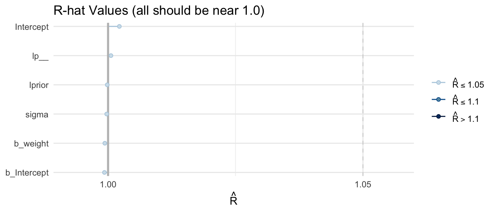
Effective Sample Size (ESS)
Because consecutive MCMC samples are autocorrelated, i.e., each draw is statistically related to the previous one, 4,000 posterior samples (4 chains × 1,000 post-warmup iterations) contain less information than 4,000 truly independent samples. The effective sample size (ESS) estimates the equivalent number of independent draws.
{brms} reports two ESS variants:
- Bulk ESS: governs the reliability of posterior mean and median estimates
- Tail ESS: governs the reliability of credible interval bounds (where samples are sparse)
Both should exceed 1,000 for trustworthy summaries. Stan’s HMC sampler typically achieves high ESS per iteration due to its low autocorrelation.
mcmc_neff(neff_ratio(m_bayes)) +
yaxis_text(hjust = 1) +
labs(title = "Effective Sample Size Ratio (higher is better; > 0.1 is acceptable)") +
theme_minimal()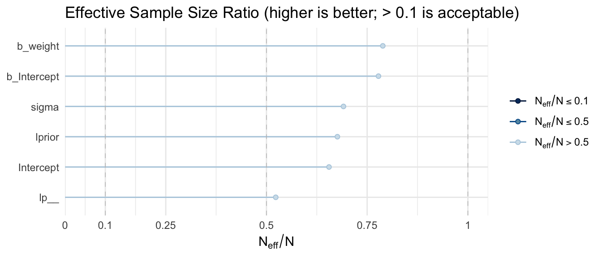
Autocorrelation Plots
Autocorrelation plots show how correlated each sample is with samples \(k\) steps earlier (the lag). Ideal chains show autocorrelation dropping to near zero by lag 5–10. High autocorrelation at long lags indicates slow mixing and inflated ESS estimates.
mcmc_acf(m_bayes, pars = c("b_Intercept", "b_weight", "sigma")) +
labs(title = "MCMC Autocorrelation (should drop quickly to zero)") +
theme_minimal()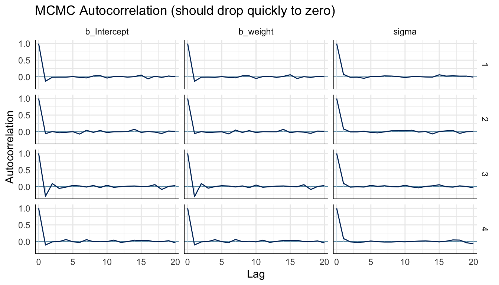
Posterior Density Plots by Chain
Overlaying the posterior density from each chain is another way to assess convergence. If all chains have explored the same posterior, their density estimates should nearly coincide.
mcmc_dens_overlay(m_bayes, pars = c("b_Intercept", "b_weight", "sigma")) +
labs(title = "Posterior Densities by Chain (should overlap closely)") +
theme_minimal()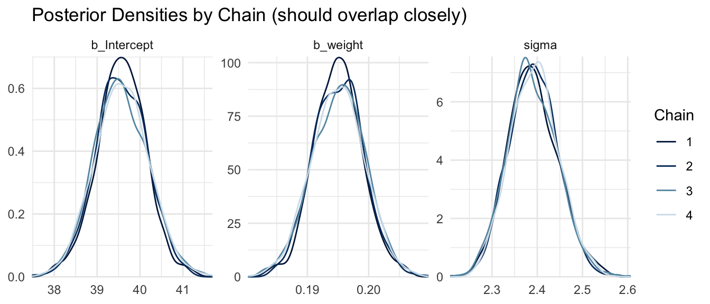
Pairs Plot
The pairs plot visualizes joint posterior distributions for pairs of parameters. It is particularly useful for detecting parameter correlations, which slow mixing and can indicate that a model would benefit from reparameterization (e.g., centering predictors).
pairs(m_bayes, variable = c("b_Intercept", "b_weight"))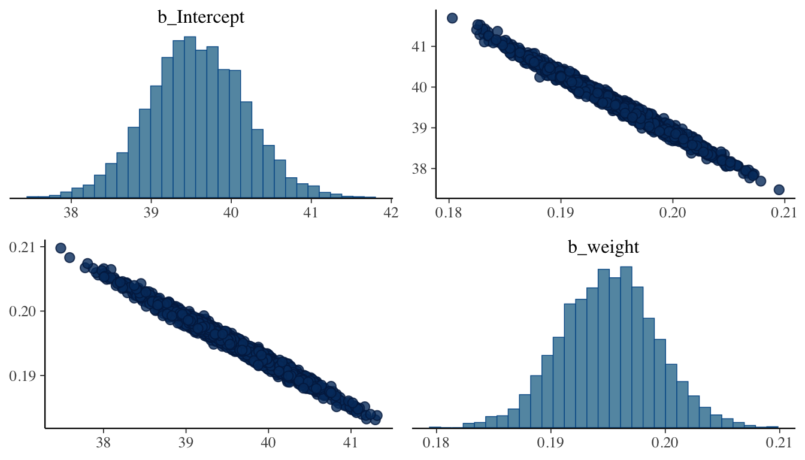
Strong correlations between the intercept and slope are common in regression and can be reduced by mean-centering the predictor before fitting.
CHALLENGE
Refit the model above using only iter = 200 and warmup = 100 with a single chain (chains = 1). Examine the trace plots, \(\hat{R}\) values, and ESS. What do you observe? What does this tell you about the importance of sufficient MCMC iterations and multiple chains?
Posterior Predictive Check
A posterior predictive check (PPC) asks: if we simulate new datasets by drawing parameters from the posterior and then simulating observations from the likelihood, do the resulting datasets resemble the data we actually observed? This is another key model evaluation tool. It tests whether the assumed data-generating process (Gaussian likelihood, linear predictor) is consistent with the observed data.
pp_check(m_bayes, ndraws = 100) +
labs(
title = "Posterior Predictive Check",
subtitle = "Simulated datasets (light lines) vs. observed data (dark line)"
) +
theme_minimal()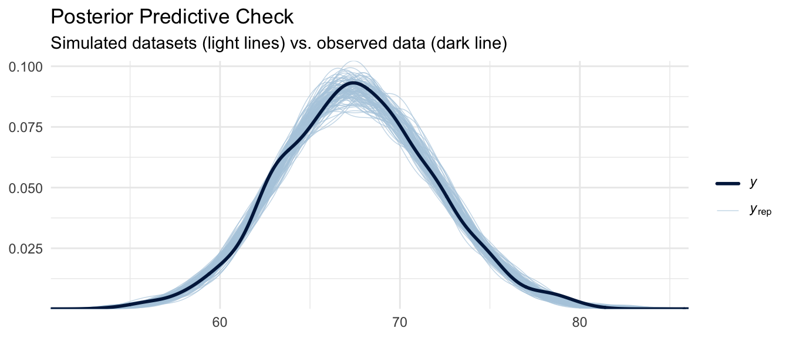
We can also examine the posterior predictive distribution of specific test statistics, such as the mean and standard deviation:
pp_check(m_bayes, type = "stat_2d", stat = c("mean", "sd")) +
labs(
title = "Posterior Predictive: Mean vs. SD",
subtitle = "Dot = observed statistic; cloud = posterior predictive distribution"
) +
theme_minimal()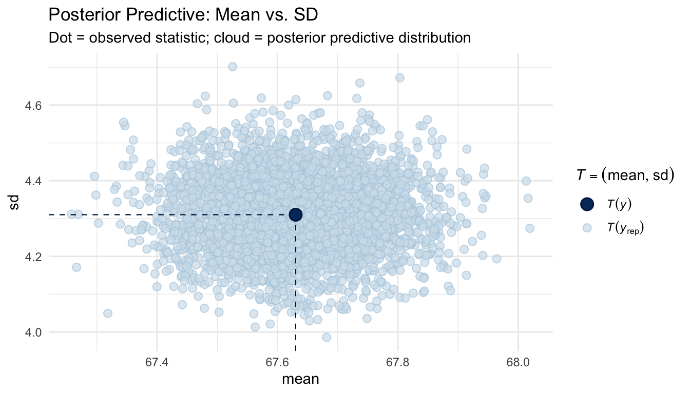
If the observed statistic (the dot) falls in a plausible region of the posterior predictive cloud, the model is capturing that aspect of the data well.
Exploring the Posterior
One of the major advantages of Bayesian inference is that the posterior is a full probability distribution. We can thus query it directly to answer questions that confidence intervals cannot address.
Visualizing Marginal Posteriors
# Extract posterior draws as a tidy data frame
posterior_df <- as_draws_df(m_bayes)
# Plot marginal posteriors for slope and intercept
posterior_df |>
select(b_Intercept, b_weight, sigma) |>
pivot_longer(everything(), names_to = "parameter", values_to = "value") |>
ggplot(aes(x = value)) +
geom_histogram(bins = 60, fill = "steelblue", color = "white", alpha = 0.8) +
facet_wrap(~parameter, scales = "free") +
labs(
title = "Marginal Posterior Distributions",
x = "Parameter Value", y = "Count"
) +
theme_minimal()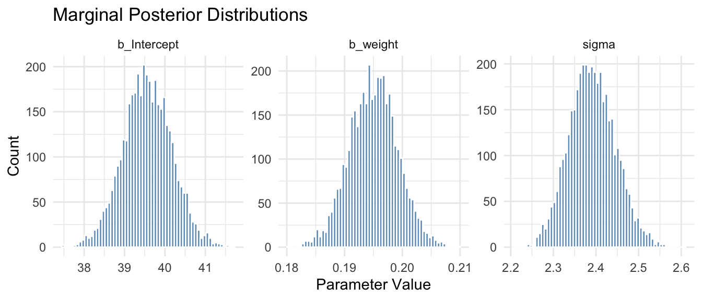
Posterior Probability Statements
A key advantage of the Bayesian posterior is that we can make direct probability statements about parameters. For example, we could ask, what is the posterior probability that the slope for weight is greater than 0.19?
mean(posterior_df$b_weight > 0.19)## [1] 0.88725Or: what is the posterior probability that the slope is between 0.19 and 0.20?
mean(posterior_df$b_weight > 0.19 & posterior_df$b_weight < 0.20)## [1] 0.77325These are statements about the probability that the parameter takes a particular value or range of values, which is something that is not possible within the frequentist framework, where parameters are fixed (if unknown) constants.
Posterior Fitted Values and Uncertainty
{tidybayes} provides elegant tools for visualizing posterior predictions with uncertainty:
zombies |>
add_epred_draws(m_bayes, ndraws = 100) |> # expected (mean) predictions
ggplot(aes(x = weight, y = height)) +
geom_line(aes(y = .epred, group = .draw), alpha = 0.1, color = "steelblue") +
geom_point(alpha = 0.4, size = 0.8) +
labs(
title = "Posterior Regression Lines (100 draws)",
subtitle = "Each line represents one draw from the posterior"
) +
theme_minimal()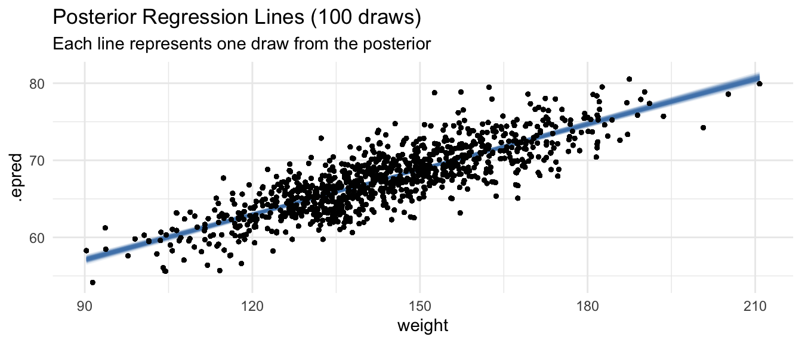
Unlike the single fitted line from OLS, each draw from the posterior represents a plausible regression line given the data and priors. The spread of these lines captures our uncertainty about the true relationship.
Comparing Bayesian and Frequentist Results
Side-by-Side Coefficient Comparison
# OLS estimates with 95% confidence intervals
ols_coefs <- broom::tidy(m_ols, conf.int = TRUE) |>
select(term, estimate, conf.low, conf.high) |>
mutate(method = "OLS (frequentist)")
# Bayesian posterior summaries with 95% credible intervals
bayes_coefs <- fixef(m_bayes) |>
as_tibble(rownames = "term") |>
rename(estimate = Estimate, conf.low = `Q2.5`, conf.high = `Q97.5`) |>
mutate(
method = "Bayesian (brms)",
term = recode(term, Intercept = "(Intercept)", weight = "weight")
)
bind_rows(ols_coefs, bayes_coefs) |>
arrange(term) |>
select(method, term, estimate, conf.low, conf.high) |>
print()## # A tibble: 4 × 5
## method term estimate conf.low conf.high
## <chr> <chr> <dbl> <dbl> <dbl>
## 1 OLS (frequentist) (Intercept) 39.6 38.4 40.7
## 2 Bayesian (brms) (Intercept) 39.6 38.4 40.8
## 3 OLS (frequentist) weight 0.195 0.187 0.203
## 4 Bayesian (brms) weight 0.195 0.187 0.203With weakly informative priors and a dataset of this size, the estimates are nearly identical. This illustrates a key principle: as sample size grows and priors are weakly informative, Bayesian and frequentist estimates typically converge. The likelihood dominates the prior when data are abundant.
Credible Intervals vs. Confidence Intervals
A common source of confusion is the interpretation of these two types of intervals. Despite their similar numerical values and appearance here, they have fundamentally different formal meanings:
| Frequentist 95% CI | Bayesian 95% Credible Interval | |
|---|---|---|
| Formal definition | If we repeated sampling infinitely, 95% of such intervals would contain the true parameter | There is a 95% posterior probability that the true parameter lies in this interval |
| Parameter status | Parameter is fixed (unknown); the interval is the random quantity | Parameter has a probability distribution; the interval is fixed given the data |
| Intuitive reading | Cannot say “95% probability the true value is in here” | Can say “95% probability the true value is in here” |
| Depends on | The sampling distribution of the estimator | The posterior distribution of the parameter |
The Bayesian credible interval has the interpretation that most people intuitively want from a confidence interval but which the confidence interval does not formally provide.
CHALLENGE
Fit a Bayesian linear regression using {brms} predicting weight from height in the zombie dataset. Use priors that reflect reasonable beliefs about the relationship. Compare the posterior means and credible intervals to the OLS results. Do the two approaches differ substantially? Why or why not?
CHALLENGE
The influence of priors is most apparent with small samples. Subset the zombie dataset to only 20 observations and refit both the OLS model and the Bayesian model with the same priors used above. How do the estimates compare now? Then refit with a strongly informative prior placing the slope near 0 (e.g., prior(normal(0, 0.1), class = b)). How much does the prior pull the posterior away from the data? What does this reveal about the relationship between sample size, prior strength, and posterior estimates?
CHALLENGE
Using as_draws_df(), compute the posterior probability that the slope for weight in the height ~ weight model is greater than 0.2. Then construct a 90% credible interval (instead of the default 95%) for the slope by finding the 5th and 95th percentiles of the posterior draws directly. Compare this to the interval reported by summary() with prob = 0.90 passed to the summary() call.
Summary
This module introduced Bayesian inference as a direct extension of the likelihood framework developed in the MLE module. The key ideas are:
- The posterior combines the likelihood (information from data) with the prior (prior belief about parameters) via Bayes’ Theorem. The likelihood is identical to what we used for MLE. The Bayesian model simply adds explicit priors on top.
- Because the posterior is usually intractable analytically, we use Markov Chain Monte Carlo (MCMC) to sample from it.
{brms}uses Stan’s efficient Hamiltonian Monte Carlo sampler under the hood. - MCMC diagnostics, including trace plots, \(\hat{R}\), ESS, and autocorrelation checking, are not optional. Always check them before interpreting results.
- Posterior predictive checks assess whether a model’s generative assumptions are consistent with the observed data.
- The Bayesian posterior is a full probability distribution. We can query it directly for probability statements, not just point estimates and intervals.
- Bayesian credible intervals have a direct probabilistic interpretation that frequentist confidence intervals formally do not, though their numerical values are often similar when priors are weakly informative and data are plentiful.
- Prior sensitivity matters most with small samples. As sample size grows, the likelihood dominates the prior and Bayesian estimates converge to MLE.